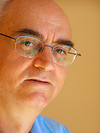
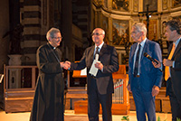

Direttore e Compositore in Bari (Italia).
Dopo aver conseguito la laurea in Filosofia, si è diplomato in Composizione presso il Conservatorio N. Piccinni di Bari, Direzione d’orchestra presso il Conservatorio A. Casella di L’Aquila, Strumentazione per Banda presso il Conservatorio G. Rossini di Pesaro.
Ha frequentato seminari di studio con G. Robev (Scuola di Musica di Fiesole), M. Couraud (Accademia Musicale Pescarese), L. Bernstein (Accademia Nazionale di Santa Cecilia), J. Panula (I Pomeriggi Musicali).
Contestualmente all’attività di docente di lettere ha svolto quella di direttore, compositore e animatore culturale.
Fondatore e direttore del Coro Sudcontrocanto, svolge attività concertistica dal 1975. Ha diretto significative pagine del repertorio sinfonico, sinfonico-corale e cameristico.
In qualità di compositore ha conseguito numerosi premi e riconoscimenti. L'ultimo riconoscimento in ordine di tempo è il primo premio al Concorso Internazionale "Anima Mundi" di Pisa (ascolta il brano).
Sue musiche sono state eseguite, incise e teletrasmesse.
Ha ricoperto l’incarico di coordinatore didattico-artistico presso il Centro di Educazione Musicale dell’Istituto Maria Cristina di Savoia di Bitonto; è stato membro della Commissione artistica dell’Associazione Regionale dei Cori Pugliesi. E’ autore di saggi e pubblicazioni musicali per le Edizioni Pizzicato, EurArte, Edizioni Paoline, A Coeur Joie, Feniarco.
Education and Degrees
Laurea in Filosofia; Università di Bari
Docente di Materie letterarie nella scuola media statale
Diploma di Strumentazione per Banda; Conservatorio “Rossini”, Pesaro
Diploma di Composizione; Conservatorio “Piccinni”, Bari
Diploma di Direzione d’orchestra; Conservatorio “Casella”, L’Aquila
Studies in conducting
Georgi Robev; Scuola di Musica di Fiesole
Marcel Couraud; Accademia Musicale Pescarese, Pescara
Leonard Bernstein; Accademia Nazionale di Santa Cecilia, Roma
Jorma Panula; I Pomeriggi Musicali, Milano
Repertoire Conducted (sinfonico e cameristico)
Albinoni-Giazotto Adagio in Sol minore per archi e organo
Bach J. S. Suite in Si minore BWV 1067 per flauto, archi e b.c.
Haydn F.J. Die sieben letzen Worte unseres Erlösers am Kreuze
(The Seven Last Words of our Savior on the Cross / Le ultime sette Parole di Cristo sulla Croce)
Haydn F.J. Sinfonia n. 44 in Mi min. “Trauer”
Haydn F.J. Sinfonia n. 85 in Si bem. “La Reine”
La Rotella P. Preghiera alla Vergine per archi
Mozart W.A. Concerto per clarinetto e orchestra K 622
Mozart W.A. Concerto per violino e orchestra in Sol maggiore K 216
Saint-Saëns C. Il carnevale degli animali
Schubert F. Sinfonia n. 5 in Si bem. magg.
Tishhauser I musicanti di Brema, per quartetto di fiati, pianoforte e v. recitante
Torelli Corcerto in Re maggiore per tromba, archi e b.c.
Vivaldi Concerto per 2 trombe, archi e b.c.
Vivaldi Concerto per 2 violoncelli, archi e b.c.
Vivaldi Sinfonia in Si minore per archi eb.c.
Repertoire Conducted (sinfonico-corale)
Bach J. S. Gloria in excelsis Deo BWV 191 cantata per soli, coro e orchestra
Bach J. S. Magnificat per soli, coro e orchestra
Britten B. The Little Sweep-Il Piccolo Spazzacamino
Cimarosa D. Magnificat per coro e orchestra
De Andrè F. La buona novella
Falco D. L’asino e le cicale, favola musicale tratta da Esopo
Händel G. F. The Messiah - Cori e Arie
Haydn F. J. Te Deum per coro e orchestra
Hazon R. La Teresina, opera per ragazzi
La Rotella P. Stabat Mater per soli, coro e orchestra
Listz F. Via Crucis per soli, coro e pianoforte
Mozart W.A. Ave verum K 618
Mozart W.A. Missa K 317 “Krönungsmesse” per soli, coro e orchestra
Mozart W. A. Regina coeli K 276
Mozart W. A. Requiem K 626 per soli, coro e pf. 4 mani; versione C. Czerny
Mozart W. A. Vesperae solennes de confessore K33 per soli, coro e orchestra
Orff C. Carmina Burana versione per soli, coro, 2 pianoforti e percussioni
Rossini G. Petite Messe Solennelle versione per soli, coro, pianoforte e harmonium
Rossini G. Stabat Mater versione per soli, coro, pianoforte a 4 mani; arr. C. Czerny
Traetta T. Stabat Mater per soli, coro e orchestra
Vivaldi A. Credo per coro, orchestra e b.c.
Vivaldi A. Gloria per soli, coro, orchestra e b.c.
Vivaldi A. Magnificat per soli, coro, orchestra e b.c.
Professional experience
Fondatore e Direttore del Coro “Sudcontrocanto”, 1975
Direttore del Coro Diocesano e dell’Orchestra del Conservatorio “N. Piccinni”, XXIV Congresso Eucaristico Nazionale, Bari 2005
Direttore del “Renaissance Choir” e del Coro “Sudcontrocanto” nell’esecuzione della “Petite Messe Solennelle” di G. Rossini, Portsmouth ed Emsworth (Gran Bretagna) 1999
Direttore dell’Orchestra Sinfonica della Provincia di Bari, produzione 8-9 giugno 2011
Maestro di Coro per:
Bacalov Misa Tango
Beethoven Fantasia Op. 80 per pianoforte e orchestra
Mozart Requiem K626
Pergolesi Missa Romana
Puccini Suor Angelica
Satie Geneviève de Brabant
Strawinski Mass
Verdi Stabat Mater e Te Deum
Villa-Lobos Choros n. 10
Villa-Lobos Magnificat, Alleluia
Other Responsabilities
Presidente dell’Associazione culturale “Nova Artistudium”, 1993-2013
Membro della Commissione artistica dell’Associazione regionale dei Cori Pugliesi, 2001-2005
Coordinatore didattico-artistico del Centro di Educazione Musicale dell’Istituto “Maria Cristina di Savoia” di Bitonto, 1993-1995
Membro del consiglio di redazione della rivista di liturgia “La Vita in Cristo e nella Chiesa”, Roma 2005-2009
Professional Honors and Activities
Premi e segnalazioni
Primo premio Concorso Internazionale "Anima Mundi", Pisa 2016 (vedi: Rivista Amadeus, ascolta: il brano)
Premio del pubblico “F. Caracciolo” Concorso di Composizione della Comunità Luterana, Napoli 2009
Menzione d’onore al Concorso di Composizione corale delle Canarie, Spagna 2001
Primo premio al Concorso Nazionale di Composizione corale, Trieste 1995
Terzo premio al Concorso Nazionale di Composizione corale, Bari 1987
Segnalazione:
- Concorso nazionale “Aureliano”, Roma 1997
- Concorso nazionale di composizione di musica sacra, Abbazia di Villanova 1998
- Concorso di composizione “L’uccellin grifone”; Sommariva Bosco (CN) 2008
- Concorso di composizione “Aleardi Parisi Pettena”, Ass. Reg. Cori Valle d’Aosta 2015
Le sue musiche sono state eseguite:
- Concorso Nazionale di Composizione, Bari-Basilica di S. Nicola 1987
- Rassegna Internazionale di Composizione “A. Gigli”, Bologna 2000
- Rassegna Internazionale di Musica Sacra, Loreto 2006
- Concorso Interregionale per Cori Polifonici, Rombiolo (Vibo Valentia) 2007
- “Un seme un giardino” - musiche di scena, Pompei 1996
In veste di direttore di coro ha partecipato al:
Festival Internazionale di Polifonia Latino-Mediterranea, Molfetta 1983, 1984. 1987
Festival internazionale di musica corale “Europa Cantat”, Mainz- Germania 2006
Festival internazionale di musica corale “Europa Cantat”, Torino 2012
Festival internazionale di musica corale “Europa Cantat”, Pècs- Ungheria 2015
Esperto di didattica musicale, ha tenuto corsi di aggiornamento:
L’attività corale nella scuola, Società Italiana Educazione Musicale - S.I.E.M. Bari 1999
L’educazione al suono e alla musica nella scuola elementare, 2° Circolo Didattico Scafati (Salerno) 1997, 1999, 2000
L’educazione al suono e alla musica nella scuola elementare, Istituto “S. Umiltà” Faenza 1992
L’educazione al suono e alla musica nella scuola elementare, I.R.R.S.A.E. di Puglia 1991,1992
L’educazione al suono e alla musica nella scuola elementare, A.I.M.C. di Puglia 1988, 19989, 1990
Ideatore del progetto “Squilli di pace” realizzato con il contributo della Unione Europea per “Cities for Peace and Democracy”, 2007
- Membro della giuria al Concorso Europeo di Composizione Organistica “R. Rodio, Castellana Grotte 2005
- Presidente della Giuria al Concorso Interregionale per Cori Polifonici, Rombiolo (Vibo Valentia) 2007
- Relatore al Convegno Nazionale AMBIMA, Assisi 2004
Published Editions, Recordings
Regina caeli per coro misto e organo, EurArte 2005
Gloria per assemblea liturgica, coro misto e organo, Edizioni EurArte 2006
Ottava fuga per coro di voci bianche, Pizzicato 2002
Canti per la liturgia in “La Vita in Cristo e nella Chiesa”, Roma
Viaggio sonoro n. 5 CD; Roma (ascolta su Spotify - ascolta su Deezer - ascolta su ITunes)
Appunti di viaggio – Coro Sudcontrocanto; CD 2000
Cantare il Natale – Coro di voci bianche Nova Artistudium, Coro Sudcontrocanto; CD 2006
Vi aspetto - Raccolta di canti per la celebrazione eucaristica del 2.9.2007; CD
Nella gioia della fede - Canti per la preghiera dei giovani; CD
Inni GMG - CD
Pubblications
Viaggio sonoro - metodo di educazione al suono e alla musica nella scuola elementare in 5 volumi e CD; Edizioni Paoline, Roma
E’ autore dei saggi:
La scelta dello strumento in “Educazione musicale” del Centro Didattico Nazionale Istruzione Artistica, Anno XI, n.4; 19974
Alcuni esempi di pratica musicale a Bitonto nel XVIII secolo. Estratto dagli Atti del Seminario di studi “Cultura e società a Bitonto nel XVIII secolo; 1979
Il Conservatorio “N. Piccinni” di Bari: aspetti socio-culturali di un Istituto d’istruzione artistica. Estratto dalla rivista “Amministrazione e politica; Anno XV, n.4/5; 1981
Per una storia della Banda – Ricerca sull’attività bandistica in Terra di Bari. Bari 1988
La musica di Mozart: una riflessione sulla musica liturgica del nostro tempo. Roma 2007
In collaborazione con la Dott.ssa Imelda Cowdrey ha tenuto:
- Seminario interdisciplinare di didattica della lingua inglese e musica presso la Facoltà di Scienze della Formazione dell’Università degli studi di Bari, 1995-96. Sintesi scritta di tale attività è contenuta nel volume “Fireworks - A work in progress”. Atti del Seminario Interdisciplinare Didattica della Lingua Inglese e Musica (1996), a cura della Dott.ssa Maria Luisa Violante
- Singing school - laboratori interdisciplinari presso l’Istituto Magistrale Statale “Bianchi-Dottula”, Bari 1997-2000.